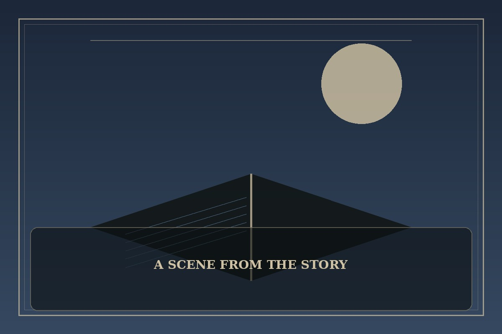

The Greatest Estate Developer
Synopsis
A practical-minded student finds himself in a world where clever planning can change a failing estate. Engineering, negotiation, and shameless enthusiasm become unlikely tools for a better future.
Chapter 1: A Bridge, a Budget, and a Very Angry Duke
The estate’s bridge had collapsed for the third time, and the duke was ready to blame the river. Leon examined the muddy foundations and asked for the accounts instead. The numbers were worse than the timber.
He proposed a new design, a fair work schedule, and a public ledger so the villagers could see where the money went. The duke objected to nearly every sentence, especially the part about paying workers on time. Leon drew a picture of the old bridge sinking and labeled it ‘expensive tradition.’
By the end of the month, the new bridge stood firm and the market road reopened. The duke claimed the idea had been his all along, but the villagers knew who had carried the plans through the rain. Leon celebrated with a feast and immediately began measuring the drainage ditch.

This fan-made sample is an original piece created for a student website project; it is not an official chapter of The Greatest Estate Developer.